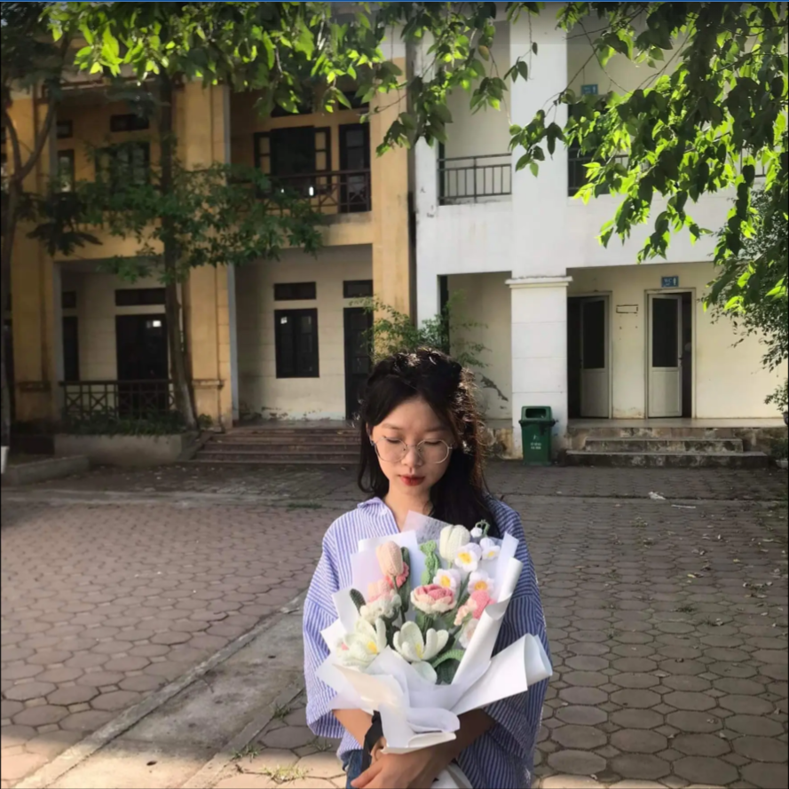
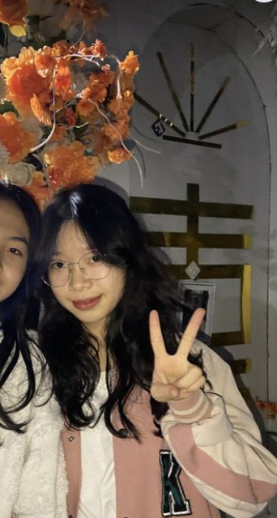
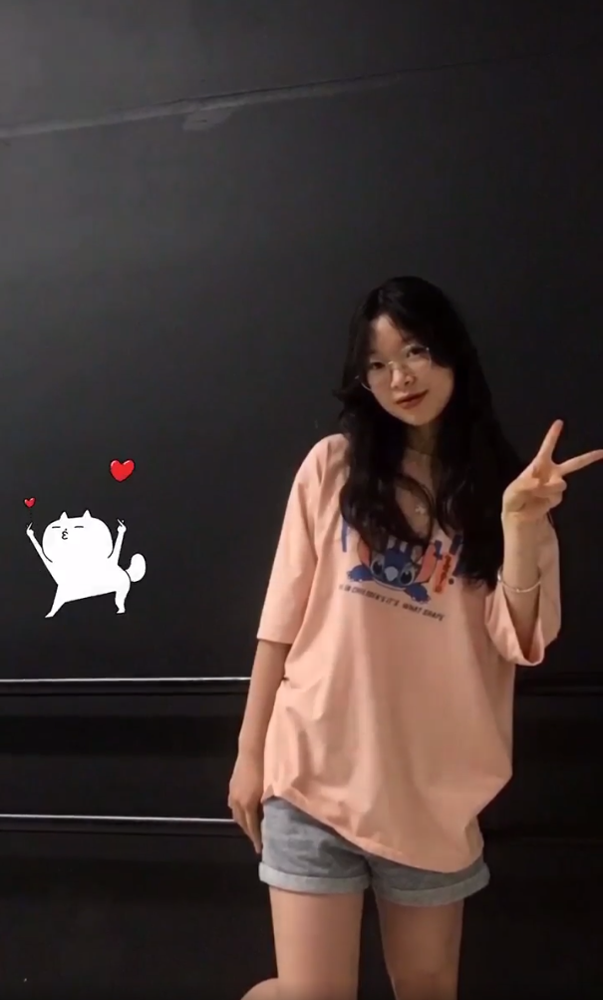

Quyên Đào
1992005 - 2652005
Đây là dòng cảm súc mà t viết cho m trong những ngày cuối cùng của thời học sinh, trong t mày luôn là đứa bạn đặc biệt, nhờ m t biết thế nào là thích một đứa mà nó ghét mình vch, t bị cuốn vào vòng xoáy luẩn quẩn đúng nghĩa khi dành nhiều thời gian nghĩ về m. T thường tìm nhiều cách để gặp m, nhưng mỗi khi gặp m t lại như một thằng đơ. Kỷ niệm với m chắc là vào hồi lớp 6 có dịp t được cô xếp ngồi cạnh m (khi ý t ghét m chắc tương đương như m ghét t năm lớp 9) lúc ý t lười học, m thì lại chăm mỗi h kiểm tra t thường sẽ tìm cách nhìn bài m nhưng m không cho nhìn t có ý định mở vở thì m dọa mách cô, à còn cả lần tổ mình làm nộm ở nhà t nữa. Tổng kết năm lớp 9 lớp mình có ký áo, t có hỏi m và được viết lên áo của m như bao bạn khác thực sự hôm đó t rất vui, m bỏ qua tin nhắn của t nhưng như thế vẫn hơn là block hẳn để t vẫn có thể làm gì đó cho m mỗi dịp năm mới hay sinh nhật dù k biết m có ấn vào liên kết không. Còn nhiều điều về m khác như quà 8/3 bị vứt bỏ, tết năm 2021 (hề),... Rồi :)) cảm ơn m đã cho t nhiều khoảnh khắc để khi t nhớ lại lại thấy vô cùng thú vị, rồi nhân dịp này thì.....
Thì cái nguyện vọng ban đầu của t là m không cần phải cố gắng đến bạc đầu hay gì cả trường tốt thì rất oke nhưng nó cũng không phải là lựa chọn duy nhất. Mà m sẽ có những cái người bạn ở bên cạnh, những cái nơi mà m có thể chia sẻ những cái niềm vui sau quá trình học tập ở trên trường lớp thì đấy mới là ý nghĩa của cấp 3. Thì t mong m sẽ mãi giữ được cái tinh thần của tuổi trẻ như này để sẽ có thêm thật nhiều kỉ niệm đẹp sau này, và t cũng mong t có thể nhắn tin nói chuyện với m như 1 thằng bạn bình thường, chỉ thế thôi.



Quyên năng động
Quyên Đào
27/05/2023
Chúng ta của sau này nhất định sẽ tốt hơn bây giờ, tự tin và không ngừng cố gắng. Chúng ta sẽ từng bước cập nhật lên phiên bản hoàn hảo nhất của chính mình.
Chân thành theo đuổi ước mơ, trân trọng từng khoảng khắc cuối thời cấp 3 này....
Mọi kì vọng đều sẽ được thực hiện một cách xứng đáng!